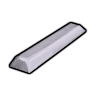
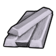
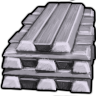
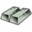
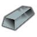
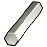
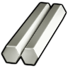
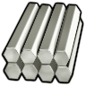
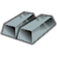

电力工业·前期HSK本地补丁×2上游补丁×3代钢级·电力工业·纯铝（Al）AluminiumBar
代钢级可塑成品 798 件:家具建筑515 · 防具140 · 穿戴件37 · 近战工具91 · 远程武器7 · 其它8
金属全谱469 + 常规硬性件329
顶替 整档替到 强化工程级·电力工业·纯钛（Ti）(798 件基准,含其下全部金属);比钢 +0/−143 件 —— 做不了 破墙斧、fuel optimizer…
② Vile 换成 Things/Item/Material/PureAluminium (225,219,234) ← Alloys_Industrial_NonFerrous.xml

aVile's Materials Science
bVile's Materials Science
cVile's Materials Science③ 生效(终态) Things/Item/Ingot (190,205,190) ← 10_Vile贴图还原.xml
 ACore_SK
ACore_SK
BCore_SKCCore_SKThings/Item/Ingot StackCount (190,205,190)(225,219,234)被11条配方消耗贴图链 3 段
护甲 0.65/0.90/0.07 利钝 0.60/0.40 价值 1.8 质量 0.22 Bulk 0.35
stuff LightMaterial, Metallic, StrongMetallic
HSK SLDBar, LightBar, HCMBar, RARBar
产自 Smelt aluminium alloy(金属提炼厂) ; Quick: Bauxite (20 Al)(金属提炼厂/Metal processing II) ; Spec: Bauxite (25 Al, 20 Cr)(电解精炼厂/Metal processing IV)
源 Core_SK
Items_Resource_Alloys_Industrial.xml
电力工业·前期HSK本地补丁×1上游补丁×3强化工程级·电力工业·纯钛（Ti）Titanium
强化工程级可塑成品 798 件:家具建筑515 · 防具140 · 穿戴件37 · 近战工具91 · 远程武器7 · 其它8
金属全谱469 + 常规硬性件329
vs 塑料多 372 件(美狐动力爪、盔甲架…);比钢少 143 件 —— 如 破墙斧、fuel optimizer… 都选不到它
① 起点 · Core_SK 的 Defs 写 Things/Item/Ingot (160,178,181)

ACore_SK BCore_SK
BCore_SK CCore_SK
CCore_SK② Vile 换成 Things/Item/Material/PureTitanium (253,254,250) ← Alloys_Industrial_NonFerrous.xml

aVile's Materials Science
bVile's Materials Science
cVile's Materials Science③ 生效(终态) Things/Item/Ingot (160,178,181) ← 10_Vile贴图还原.xml
 ACore_SK
ACore_SK
BCore_SK CCore_SK
CCore_SKThings/Item/Ingot StackCount (160,178,181)(253,254,250)被7条配方消耗贴图链 3 段
护甲 1/0.90/0.12 利钝 1.10/1 价值 8 质量 0.30 Bulk 0.35
stuff LightMaterial, Metallic, StrongMetallic
HSK SLDBar, RARBar
产自 smelt turbine blades(金属提炼厂) ; Spec: Rutile (15 Ti, 10 Mo, 20 Chromium)(电解精炼厂/Metal processing IV) ; Adv: Rutile (20 Ti)(金属提炼厂/Metal processing III)
源 Core_SK
Items_Resource_Alloys_Hightech.xml